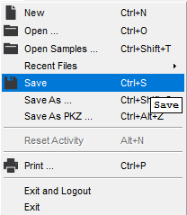
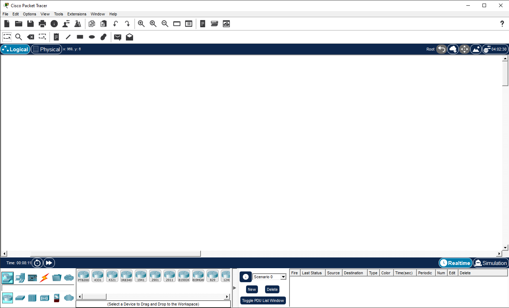
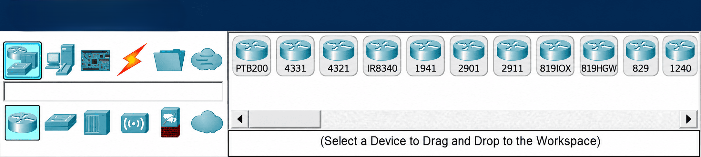
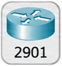
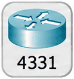
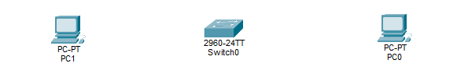
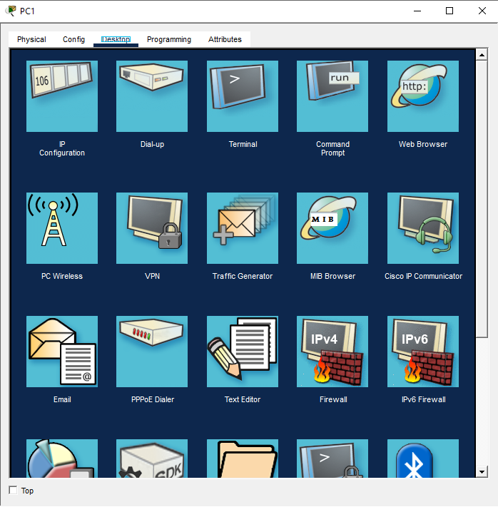

Espai de treball
És la zona central on col·locaràs els dispositius, els connectaràs i construiràs les teves xarxes.

Xarxes Locals · SMX1
Aprèn a utilitzar Cisco Packet Tracer: des de la instal·lació i l'inici de sessió fins a conèixer les eines, els dispositius i les connexions que necessitaràs per construir les teves primeres xarxes.
Selecciona una zona per situar-la a la captura i saber per a què serveix.

És la zona central on col·locaràs els dispositius, els connectaràs i construiràs les teves xarxes.

El panell de selecció funciona per nivells: primer selecciona la categoria principal, després la subcategoria i, finalment, el model o tipus de connexió que apareix a la dreta.



Afegeix dos ordinadors PC-PT i un switch 2960-24TT a l'espai de treball, amb el switch al centre.

Ara configurarem les adreces IP dels ordinadors per aconseguir que es comuniquin.

Crea una xarxa local amb dos ordinadors i un switch, configura les adreces IPv4 i comprova la connectivitat.
Objectiu: Aprendre a muntar una xarxa local senzilla, configurar manualment les adreces IPv4 i comprovar la comunicació entre dos ordinadors.
Col·loca dos ordinadors PC-PT i un switch 2960-24TT. Connecta cada ordinador al switch amb un cable Copper Straight-Through, seleccionant manualment els ports.
Espera que els indicadors dels enllaços siguin verds abans de continuar.
| Dispositiu | Adreça IPv4 | Màscara |
|---|---|---|
| PC0 | 192.168.1.10 | 255.255.255.0 |
| PC1 | 192.168.1.20 | 255.255.255.0 |
Obre cada ordinador, accedeix a Desktop → IP Configuration, selecciona Static i introdueix l'adreça IPv4 i la màscara indicades.
Deixa la porta d'enllaç i el servidor DNS sense configurar.
Des de PC0, obre Desktop → Command Prompt i executa:
ping 192.168.1.20Comprova si PC1 respon. Si el primer intent falla, espera uns segons i repeteix la prova.
Canvia temporalment l'adreça IPv4 de PC1 a 192.168.2.20, mantenint la màscara 255.255.255.0.
Des de PC0, executa:
ping 192.168.2.20Observa el resultat.
Torna a configurar PC1 amb l'adreça 192.168.1.20 i la màscara 255.255.255.0. Repeteix el ping des de PC0 i comprova que la comunicació torna a funcionar.
Pots consultar Munta i configura una xarxa mentre realitzes la pràctica.
Abans de començar, descarrega i instal·la Cisco Packet Tracer al teu ordinador. Pots obtenir l'instal·lador des de l'enllaç següent.
Descarregar Packet TracerObre el programa i identifica les pantalles que apareixen abans de començar a treballar.
Atenció: si utilitzes un ordinador públic o compartit, no activis l'opció de mantenir la sessió iniciada.
S'obrirà la pàgina de Cisco Networking Academy.
Si l'accés amb Google falla, pots utilitzar l'enllaç “Inscríbase”, a la part inferior de la pantalla, per crear un compte amb correu electrònic i contrasenya. Si ja tens un compte, intenta recuperar l'accés abans de crear-ne un altre.